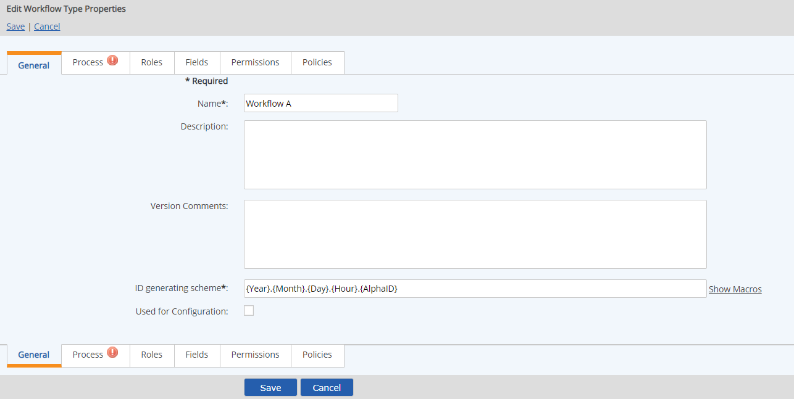
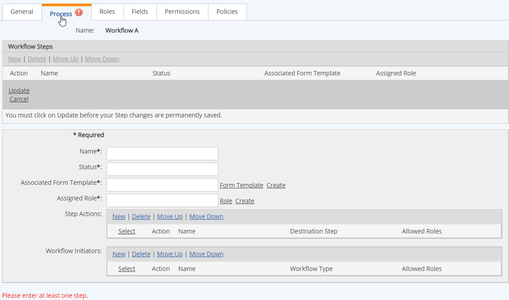
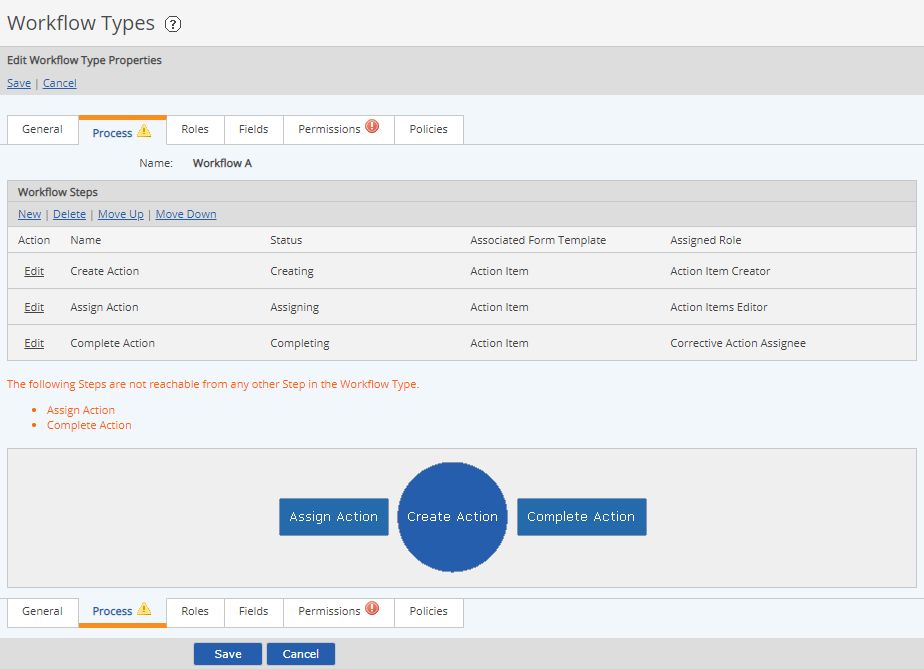
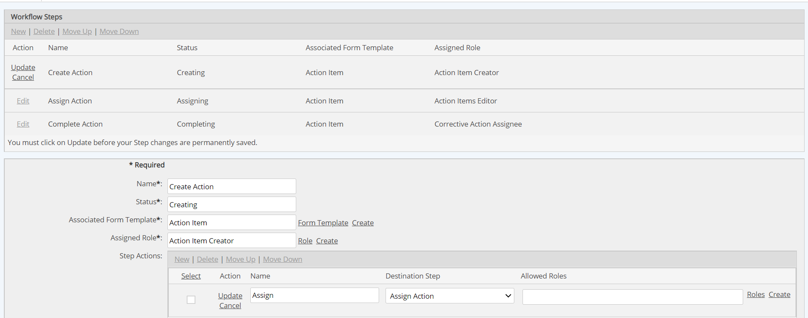
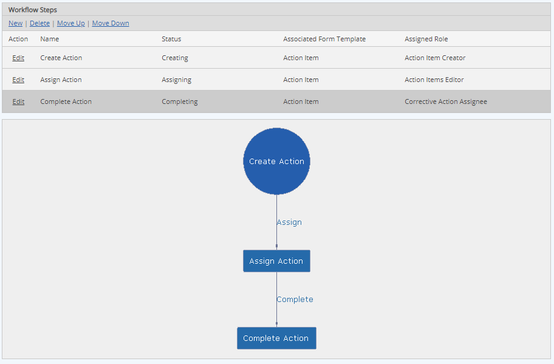
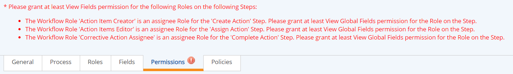

Before creating a new workflow type, you will need to create some components that you will need. At minimum, you will need one or more Form Templates and one or more Workflow Roles. Both of these components can be created on-the-fly in the process of creating the workflow type but it will make more sense to have them ready.
See Workflow Type Editor for a description of the workflow components and build process.
To create a new workflow type:
Enter a Name for the workflow type.
The workflow type name is limited to 256 characters. If the workflow type name is used in the id generating scheme, which has a limit of 60 characters, it will also need to be short enough not to exceed that limit in combination with other generating scheme components.
If “/” or “%” is inputted in the Workflow Step name, a warning message displays "If you intend to use the WF type with Advanced Workflows do not use these characters in the WF step name".
Select an ID generating scheme for the workflow instances.
The id generating scheme may use any of the available macros, and include characters of your own definition. It is limited to 60 characters in total. See Workflow ID Generating Scheme.
Optional fields on the General tab:
Description: Optional description of workflow type and purpose
Version Comments: When creating a new version, you can add comments to describe version changes.
Used for configuration: This flag indicates a workflow that is used for configuring an App. Workflows so designated can be hidden so that users cannot edit them.

Select the Process tab to define the workflow process.
Defining the workflow process consists of defining each step in the process, the actions that are allowed at each step, the associated form template and the assigned role. It will help if you have a diagram of the workflow process to begin with.
In the Workflow Type editor, click the Process tab to begin creating the process for a new workflow type. Since there are no steps yet in the process, the form for defining the first step is displayed.

The step fields are described below.
Name: Name of the step
Status: Status of the workflow instance when this is the active step
Associated Form Template: The form template that contains the fields the step assignee will view and complete for this step. View or edit permissions can be granted to individual fields on the form through the Permissions tab.
Assigned Role: The workflow Role assigned to this step. Default role members are assigned in the Role Membership tab.
Step Actions: The options available to the step assignee to transition the workflow to another step. Each step action must have a name, a destination step, and one or more roles allowed to execute the action.
Workflow Initiators: Optional. Used to define a child workflow that may be initiated from a step. Includes the name, workflow type to be initiated, and the roles who are allowed to initiate the child workflow.
The workflow schema displays a graphic view of the process, which is updated instantly as the steps and step actions are defined.
Choose the Associated Form Template. Click Form Template to choose the template from a popup window. Or click New to create a new form template. See Form Templates.
The same Form Template may be used on different steps, or each step may have its own form template. Permissions to view or edit individual fields can be granted on a workflow or step basis on the Permissions tab.
Use the Assigned Role section to assign or create a role. Click Role to choose from a popup window. See Workflow Roles. Click Create to create a new Role for the step. You can create a workflow with roles that have no members assigned (empty roles), or you can have user groups with no members.
Before you can define the Step Actions, you will need to create a destination step for each possible action. The step actions are the choices a step assignee has at that step to transition the workflow to another step.
One approach is to create all the steps you need in the process first, then edit each step to create the links between them by defining the step actions.

Repeat steps 1-4 to create consecutive steps.
Do not click Save until you are ready to save and exit the workflow. If you click Save, you will receive a warning that there are steps that are not reachable from any other steps in the workflow. You may proceed to save and return later to edit the workflow, but the workflow will not be usable until you have completed the process and defined role permissions.
After you have created the steps, you can create the Step Actions, which are the connections between them that define the process flow.
In the Step Actions section, click New.

Each step may have more than one possible action and resulting workflow path. The name of the action is the text users see as an option for taking the workflow to the next logical step. For example, a Review step in a workflow might have two action options: Approve or Reject, which result in transitioning the workflow to different destination steps.
Optionally, you may create a workflow initiator, if you want to allow the creation of a child workflow at this step. The child workflow must be created first. If you have not yet created the child workflow, you can return and edit the workflow later to include it. Workflow initiators only apply to those workflows that have child workflows.
Continue by adding step actions to connect all the steps. As you add actions, the diagram will adjust to show the workflow process flow.
For the last step in the Workflow, you do not need a step action, unless you want an alternate path back to another step in the workflow. The default workflow operation End Workflow is used to close out the workflow on the last step.

Next, you will need to grant Permissions to each of the Roles assigned to the steps so they can view or edit form fields and complete specific actions. Select the Permissions tab to assign permissions.
The message at the bottom of the Permissions tab will tell you the minimum permissions you need to assign before saving the workflow type. For more details, see Workflow Permissions.
